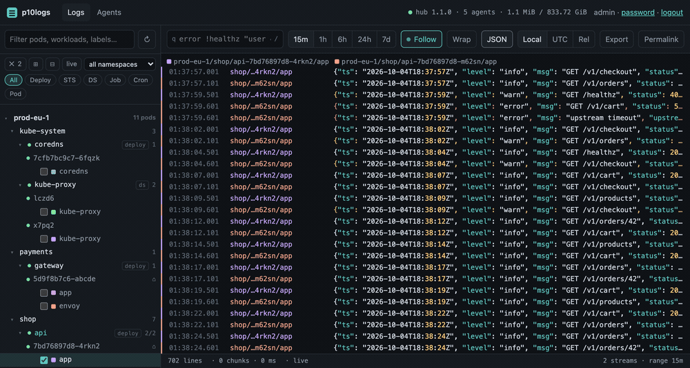
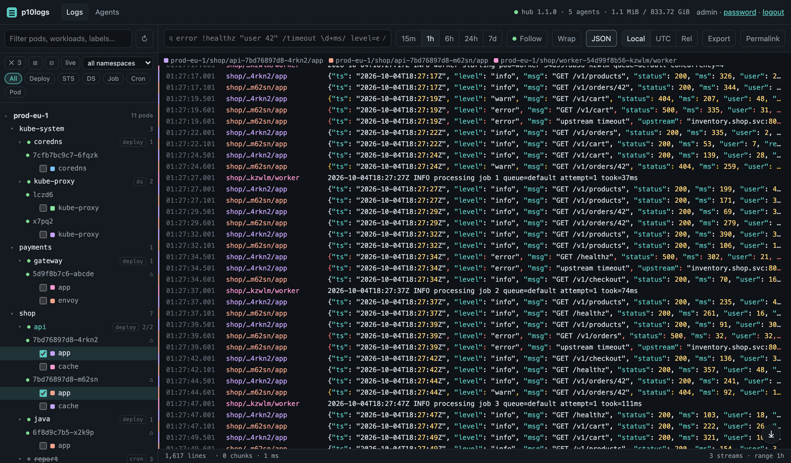
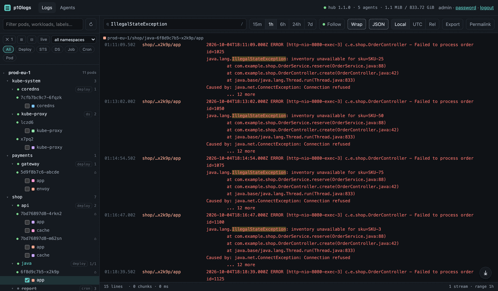
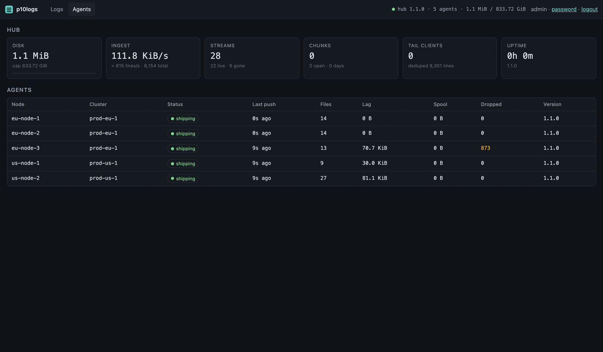

p10logs¶
Persistent, multi-cluster Kubernetes pod logs. Nothing else.
Demo: https://demo-p10logs.p10node.org (admin/BqJDmpsGRJE85Z0cULFOeoRP)
p10logs is a small, self-contained log system for Kubernetes: one DaemonSet agent that reads container log files straight off the node, one hub with a persistent volume that stores and indexes them, and a fast built-in UI to browse, search, and tail pods across any number of clusters. No metrics pipeline, no Prometheus, no Grafana, no Elasticsearch, no object store required.
Status: v1.1. Formats and the
/api/v1API are frozen since 1.0 (see docs/FORMATS.md). Verified by unit tests, a local end-to-end run (make e2e: ingest, filter, live tail, agent restart without loss or duplicates, kubelet rotation,kill -9hub recovery with WAL replay, pod deletion, index rebuild, per-cluster tokens, viewer roles, federation, S3 offload), a single-node kind run (make e2e-kind: chart install, real kubelet log files, label enrichment, Helm upgrade with data retained) and a multi-cluster kind run (make e2e-multi: 3-node hub cluster + spoke cluster pushing over the network, demo workloads, restart boundaries, 20 KiB lines, multiline traces, rate limits, token scoping, hub outage with spool and drain). See CHANGELOG.md.
Screenshots¶

 |
 |
| Tree grouped by workload; three streams interleaved with a colour per pod, restart boundaries, JSON highlighting. | Filter IllegalStateException over joined stack traces, Wrap mode, search terms highlighted. |

Why another log tool¶
Teams that just want "show me the logs of that pod, including from before it restarted, across my clusters" currently choose between two bad options:
Live viewers without storage (Dozzle, kubetail, stern, kubectl logs) all stream
through the Kubernetes API server: browser → apiserver → kubelet → log file. Every open
container is a long-lived connection through the control plane, the kubelet polls and
issues a CRI status call per stream per second, the kubelet hard-kills any stream after
4 hours, only the current 10 MiB log file is ever visible, and nothing survives a pod
restart. Dozzle additionally polls the metrics API for CPU/RAM charts and does all
parsing and rendering in the browser, which is where its "UI timed out" and
200-container freezes come from. The lag you feel is structural, not a bug.
Full observability stacks (Elastic, SigNoz/ClickHouse, Loki + Grafana, OpenObserve) persist logs but ship metrics, traces, dashboards, compactors, and multi-gigabyte memory floors along with them. Loki's monolithic mode runs 1.5–7 GiB; Elastic and ClickHouse start at 4 GB and want much more.
VictoriaLogs is the honest exception: a single binary that stores logs in well under 2 GiB at high ingest rates. If you already run it, keep it. p10logs exists for people who want something even smaller and more opinionated: a pod-centric UI, a one-command Helm install that covers many clusters, built-in auth, and a grep-like filter instead of a query language.
What you get¶
- Every pod's stdout/stderr, persisted. Logs survive pod restarts, pod deletion, node reboots, and p10logs upgrades. Retention is time- and size-based, per namespace if you want.
- No API-server load. The agent reads
/var/log/podsdirectly; namespace, pod, container, and restart count come from the file path. Zero watches by default; with label enrichment on, exactly one watch per node, scoped to that node's pods. - Multi-cluster in one screen. Agents in any cluster push to one hub over HTTPS with a bearer token, egress-only, so private clusters and home labs work. Or run a hub per cluster and federate queries.
- Fast UI. Tree of
cluster → namespace → pod → container, live tail of one or many pods with server-side rate limiting, virtualized rendering, time range, filter, export, permalinks. Never opens a Kubernetes API stream. - Small. Target footprint: agent ~30 MiB RSS, hub a few hundred MiB for tens of GB/day. Two static Go binaries, one Helm chart, one PVC.
- Exactly-once, in practice. Agent checkpoints on the node; hub deduplicates by file offset. Restarting anything neither loses nor duplicates lines.
- Logs only. No metrics endpoint unless you turn it on. No scraping. No traces.
What it deliberately is not¶
- Not a query language or analytics engine. Filters are
word,!word,"phrase",/regex/,key=valuefor JSON lines. No aggregations, no SQL, no LogQL. - Not a full-text search cluster. Search is a time-bounded scan; a trigram bloom
filter per sealed chunk skips chunks that cannot contain the search words, so
cluster-wide "find this string in the last 30 days" is cheap when the string is rare,
and bounded by
query.maxScanByteswhen it is not. - Not HA. The hub is a single StatefulSet replica on a PVC; agents buffer to disk while it is down (restarts take seconds; the WAL makes them lossless). Back up the PVC or enable object-storage offload for durability beyond one disk.
- Not a collector for arbitrary files, syslog, or journald. Container stdout/stderr only.
- Not an alerting system.
How it compares¶
| p10logs | Dozzle | kubetail | Loki + Alloy | VictoriaLogs + vlagent | Elastic / SigNoz | |
|---|---|---|---|---|---|---|
| Reads logs from | node files | kube API | kube API (or agent: node files) | node files | node files | node files |
| Survives pod restart / deletion | yes | no | no | yes | yes | yes |
| Rotated log files visible | yes | no | no | yes | yes | yes |
| Load on apiserver | none | 1 stream per container viewed | 1 stream per container viewed | none (labels: watch) | none | none |
| Multi-cluster | one chart, push or federate | Docker only | desktop context switch | tenants | tenants | yes |
| Typical hub RAM | hundreds of MiB (target) | n/a | n/a | 1.5–7 GiB | 0.6–2 GiB | ≥ 4 GB |
| Metrics shipped by default | no | CPU/RAM polling | no | Grafana stack | optional | full platform |
| UI | pod tree, tail, search | container list, tail, stats | pod tail, search | Grafana | vmui (query-first) | full platform |
| Auth built in | token + basic/OIDC | users file | none | Grafana | none (vmauth) | yes |
| Query language | grep-like | none | none | LogQL | LogsQL | KQL / SQL |
Numbers as of 2026-09 from independent benchmarks and vendor docs: VictoriaLogs vs Loki (Truefoundry), log collectors benchmark 2026 (VictoriaMetrics), Loki sizing, SigNoz capacity planning, Dozzle K8s guide, kubetail cluster agent.
Architecture¶
every node one hub (StatefulSet + PVC)
┌────────────────────────────┐ ┌────────────────────────────────┐
│ /var/log/pods/…/0.log │ │ POST /api/v1/push │
│ │ scan 2s + tail │ zstd NDJSON │ auth → WAL → dedup → chunk │
│ ▼ │ ───────────────► │ │ │
│ p10logs-agent (DaemonSet) │ HTTPS, bearer │ ┌────┴─────┐ │
│ parse CRI · batch · ship │ │ ▼ ▼ │
│ checkpoint · disk buffer │ │ /data/days live bus → SSE │
└────────────────────────────┘ │ index.sqlite │
│ retention loop │
other clusters ───────────────────────────────► │ GET /api/v1/{streams,query, │
(agents only, egress-only) │ tail,export} · UI at / │
└────────────────────────────────┘
- Agent: Go, DaemonSet, runs as root with a read-only filesystem and no
capabilities. Discovers
<ns>_<pod>_<uid>/<container>/<restart>.log, parses the CRI format (including 16 KiB partial-line reassembly), follows kubelet rotation by inode, checkpoints read offsets to a hostPath so restarts resume exactly, batches and zstd-compresses lines, and pushes over HTTP. If the hub is unreachable it spools to a bounded disk buffer on the node. - Hub: Go, StatefulSet with one PVC. Every push is fsynced to a write-ahead log and acknowledged, buffered per stream in memory, then written to a per-stream chunk under a UTC day directory as a large zstd frame. Chunks seal at 4 MiB or 5 minutes with a footer (frame time index + trigram bloom filter), the SQLite catalog is derived state, retention deletes day directories, cold chunks can live in any S3-compatible bucket, and the UI is embedded.
- UI: single-page app embedded in the hub binary. Virtualized list, no external assets, all state in the URL.
Full details, on-disk formats, wire protocol, and failure-mode table: docs/ARCHITECTURE.md.
Quick start¶
Requirements: Kubernetes ≥ 1.26, Helm ≥ 3.8, a default StorageClass, containerd or CRI-O (legacy Docker works with one extra value).
helm install p10logs oci://ghcr.io/p10node/charts/p10logs \
--namespace p10logs --create-namespace \
--set global.clusterName=dev
# hostPath volumes need the "privileged" Pod Security level in this namespace
kubectl label ns p10logs pod-security.kubernetes.io/enforce=privileged --overwrite
kubectl -n p10logs port-forward svc/p10logs-hub 8080:8080
open http://localhost:8080
First sign-in is admin / admin; the hub then asks you to set a new password and keeps
it hashed on its data volume. Prefer to manage it outside? Set
hub.auth.ui.basic.password or existingSecret and no onboarding happens. For a public
demo add hub.auth.ui.basic.lockPassword=true: the configured password is the only one
accepted and nobody can change it from the UI.
Within a few seconds the tree fills with every namespace and pod on the cluster, including logs that were already on disk before p10logs was installed (current plus rotated files, up to what kubelet kept).
Multi-cluster¶
Hub + spokes (default recommendation): install once with an Ingress in the central cluster, then install agents only in each other cluster:
# central
helm install p10logs oci://ghcr.io/p10node/charts/p10logs -n p10logs --create-namespace \
--set global.clusterName=central \
--set hub.ingress.enabled=true \
--set 'hub.ingress.hosts[0].host=logs.example.com' \
--set 'hub.ingress.tls[0].secretName=p10logs-tls' \
--set 'hub.ingress.tls[0].hosts[0]=logs.example.com'
TOKEN=$(kubectl -n p10logs get secret p10logs-ingest -o jsonpath='{.data.token}' | base64 -d)
# each spoke
helm install p10logs oci://ghcr.io/p10node/charts/p10logs -n p10logs --create-namespace \
--set global.clusterName=prod-eu-1 \
--set hub.enabled=false \
--set agent.hub.url=https://logs.example.com \
--set agent.hub.token=$TOKEN
Spokes need outbound HTTPS only. Serve the hub over HTTP/2 (any TLS ingress does) so several browser tabs can tail at once; HTTP/1.1 caps a browser at six connections per host. Agents compress before sending (text logs shrink 5–10×) and spool to local disk during hub outages.
Per-cluster tokens (hub.auth.clusterTokens) stop a leaked spoke token from
writing as another cluster. Federation (hub per cluster, one UI: hub.federation.peers)
is described in docs/MULTI_CLUSTER.md; stream ids from a peer
appear as <peer>/<id> and the tree shows which hub serves each cluster.
Configuration¶
All configuration is Helm values. The important ones:
| Value | Default | Meaning |
|---|---|---|
global.clusterName |
default |
Label stamped on every line. Unique per hub. |
agent.enabled / hub.enabled |
true / true |
Topology switches. Spoke = hub.enabled=false. |
agent.hub.url, agent.hub.token |
in-cluster / generated | Where agents push, and with what. |
agent.collect.excludeNamespaces |
[] |
Skip namespaces at the source (zero cost). |
agent.collect.excludeContainers |
[] |
e.g. [istio-proxy]. |
agent.enrich.enabled, .labels, .annotations |
false |
Attach selected pod labels/annotations via one node-scoped watch; then label=app:api works as a selector. Also adds _owner (Deployment/api, CronJob/report, …) so the UI groups pods by workload. |
agent.multiline.enabled |
false |
Join stack traces by start-pattern. |
agent.buffer.maxBytes |
256Mi |
Disk spool per node while hub is down. |
agent.rateLimit.linesPerSecondPerContainer |
0 |
Cap a log-spamming pod. |
hub.storage.persistence.size |
50Gi |
PVC size. |
hub.storage.retention.maxAge |
168h |
Delete days older than this. |
hub.storage.retention.maxDiskBytes |
0 = 90 % of PVC |
Delete oldest days when exceeded. |
hub.storage.retention.overrides |
[] |
Per <cluster>/<namespace> glob, e.g. keep prod/* 30 d. |
hub.storage.objectStore.* |
off | Copy sealed chunks to any S3-compatible bucket after uploadAfter; evict local copies first under disk pressure; cold reads are transparent. |
hub.auth.ui.mode |
basic |
none, basic, or oidc. |
hub.auth.ui.basic.lockPassword |
false |
Demo hubs: the configured password cannot be changed from the UI (needs password or existingSecret). |
hub.auth.clusterTokens, hub.auth.roles |
[] |
Ingest tokens bound to clusters; viewer roles bound to cluster/namespace globs. |
hub.ingress.* / hub.httpRoute.* |
off | Expose the hub. |
hub.federation.peers |
[] |
Other hubs to query, tail and export through this one. |
hub.limits.perCluster.bytesPerSecond |
0 = unlimited |
Throttle a noisy spoke cluster. |
hub.metrics.enabled |
false |
Prometheus endpoint. Off on purpose. |
See charts/p10logs/values.yaml for everything, with comments.
GitOps (ArgoCD, Flux)¶
Auto-generated secrets rely on Helm lookup(), which is empty when the chart is
rendered with helm template. Create the ingest and UI secrets yourself and point
hub.auth.existingSecret, agent.hub.existingSecret, and
hub.auth.ui.basic.existingSecret at them, or the values change on every sync.
Agents re-read the token file on 401, so rotating a token never needs a restart.
Legacy Docker / cri-dockerd nodes¶
--set agent.hostPaths.docker=/var/lib/docker/containers
Using the UI¶
- Tree on the left: cluster → namespace → workload → pod → container. Pods are grouped
under their Deployment / StatefulSet / DaemonSet / Job / CronJob (from the agent's
_ownerlabel whenagent.enrich.enabled, otherwise guessed from the pod name) with a kind badge, pod count and restart total; clicking a workload tails all of its containers. Pods that no longer exist stay listed (greyed) until their logs age out; the live toggle hides them. Under the search box: unselect all, expand / collapse all, a namespace selector and workload-kind chips. Search matches pod, workload, kind and label text. - Tail: click a container, or select several pods to interleave them by timestamp
with a colour per pod (globs such as
pod=api-*are an API feature). Follow mode uses SSE; if a pod logs faster than the per-client cap the server drops and shows adropped N linesmarker rather than freezing the tab. Only visible rows are rendered; the tab keeps at most 10 000 lines in memory and re-fetches older ones from the hub when you scroll up. - Time range: presets or absolute. Historic views page backwards from the newest line.
- Filter box, same grammar as the API
qparameter:
| Syntax | Matches |
|---|---|
error |
lines containing error (case-insensitive) |
!healthz |
lines not containing healthz |
"user 42" |
exact phrase |
/timeout \d+ms/ |
RE2 regex |
level=error |
JSON lines whose level field equals error |
error !healthz level=error |
all terms must match |
- Export downloads the current view as text (the API also serves
format=ndjson). Permalink copies a URL with every setting.
HTTP API¶
All endpoints are under the hub. UI auth applies (Authorization: Bearer also accepted
for API tokens).
| Method & path | Purpose |
|---|---|
POST /api/v1/push |
Agent ingest. Bearer ingest token. zstd NDJSON body. |
GET /api/v1/streams?cluster=&namespace=&pod=&since= |
List streams (pods/containers) with first/last timestamps and restart counts. |
GET /api/v1/query?…&start=&end=&q=&limit=&dir=&cursor= |
Historic lines, newest-first by default, paginated. |
GET /api/v1/tail?…&q= |
Server-Sent Events live tail. |
GET /api/v1/export?…&format=txt\|ndjson |
Streamed download. |
GET /api/v1/status |
Hub health, disk usage, ingest rate, one row per agent (node, last seen, lag, spool). |
GET /healthz, GET /readyz |
Probes. |
GET /metrics |
Only if hub.metrics.enabled. |
Selectors (cluster, namespace, pod, container) accept exact values or globs
(api-*); uid pins one pod instance; sid selects stream ids from /streams;
label=key:value (repeatable) matches enrichment labels. Timestamps are RFC 3339, unix seconds/millis/nanos, now, or relative (-15m, -6h, -7d, -2w). Query
responses report chunks read, skipped_chunks excluded by bloom filters,
scanned_bytes, ms, truncated, and next for the older page.
Example:
curl -s -u admin:$PW 'http://localhost:8080/api/v1/query?namespace=payments&pod=api-*&start=-1h&q=error+!healthz&limit=200'
Storage and retention¶
- Data lives in
/dataon the hub PVC:days/<YYYYMMDD>/<cluster>/<ns>/<pod-uid>/<container>/*.chunkplusindex.sqlite. Chunks are append-only and, once sealed, immutable. - Disk usage is roughly raw × 0.1–0.2 (zstd on text logs). 30 nodes producing 15 GB/day raw for 7 days need about 20 GB.
- Retention runs every minute: delete day directories older than
maxAge, then oldest days until undermaxDiskBytes, always keeping today. Per-namespace overrides delete just those sub-directories. - Optional cold tier: sealed chunks are copied to an S3-compatible bucket (AWS S3,
MinIO, Cloudflare R2, Backblaze B2, GCS in interoperability mode) after
uploadAfter. Under disk pressure the hub evicts local copies of offloaded chunks before it deletes any day. Queries fetch cold chunks into a bounded cache. Deleting a day also deletes its objects.--rebuild-indexlists the bucket, so a hub with an empty PVC and the bucket recovers everything. p10logs-hub --checkverifies every chunk footer, open chunk, the WAL and the index without changing anything and exits non-zero on problems.- Backup = snapshot the PVC, or rely on the bucket. Restore = mount it, or start with
an empty PVC and run
--rebuild-index.
What survives what¶
| Event | Lines lost? | Lines duplicated? |
|---|---|---|
| Pod restarts / crashes | no, previous restart's file was already shipped | no |
| Pod deleted | no, agent drains the file before kubelet removes the directory | no |
| Agent pod restarts or upgrades | no, resumes from checkpoint on hostPath | no, hub dedups by offset |
| Node reboots | no, same checkpoint | no |
| Hub down < buffer capacity | no, spooled on nodes | no |
| Hub down > buffer capacity | oldest spooled batches dropped, a marker line is written | no |
| Hub crashes mid-write | no, un-acked batches are resent | no |
| Pod logs faster than the agent reads for longer than kubelet keeps rotated files | yes (default window ≈ 50 MiB per container) | no |
| PVC full | ingest paused (503), agents spool, retention frees space | no |
Security¶
- Agent:
hostPathread-only mounts of/var/log/pods(files are root-owned 0640, so the agent runs as UID 0), read-only root filesystem, all capabilities dropped, noprivileged. The namespace needs theprivilegedPod Security level solely because ofhostPath. - Agent → hub: bearer token (generated on install, or yours), TLS via your Ingress, optional private CA. Per-cluster tokens in v0.3.
- Hub UI/API:
basic(default: login form with a session cookie; first run isadmin/adminfollowed by a forced password change, passwords stored as PBKDF2-SHA256 on the data volume, changeable in the UI; or a password from a Kubernetes secret, optionally locked withlockPasswordfor demo hubs),oidc(authorization-code flow with an email or domain allow-list, roles by user or domain), ornoneif you front it with your own SSO proxy. HTTP Basic headers andhub.auth.apiTokensbearer tokens work for scripts in any mode. - Viewer roles (
hub.auth.roles) scope reads: a role lists users (basic usernames or OIDC emails), email domains, or its own API tokens, plus cluster and namespace globs. Once any role exists, identities that match none are denied; globalapiTokensstay unrestricted. Federated queries carry the caller's scope to each peer through the peer token's own role on that hub. - Chart releases are signed with cosign (keyless, GitHub Actions OIDC). Verify before installing:
bash
cosign verify ghcr.io/p10node/charts/p10logs:<version> \
--certificate-identity-regexp='^https://github.com/p10node/p10logs/' \
--certificate-oidc-issuer=https://token.actions.githubusercontent.com
OIDC¶
The hub is a standard OpenID Connect relying party (built on coreos/go-oidc), so any
open-source provider works: Keycloak, Dex, Authentik, Zitadel, Kanidm, or a hosted one
such as Google or Entra ID. Register a confidential client with redirect URI
https://<hub-host>/auth/callback, put the client secret in a Kubernetes secret under
the key client-secret, then:
hub:
auth:
ui:
mode: oidc
oidc:
issuerUrl: https://keycloak.example.com/realms/main
clientId: p10logs
clientSecretRef: p10logs-oidc
allowedDomains: [example.com] # or allowedEmails: [a@example.com]
publicUrl: https://logs.example.com # only if your proxy hides the scheme
Sessions are HMAC-signed cookies valid for 12 hours; the signing key is generated at
start (set auth.sessionKeyFile in hub.yaml to keep sessions across restarts).
- Hub runs as non-root UID 65532, read-only root filesystem.
- No component ever needs pods/log, exec, or write access to the Kubernetes API.
The only optional RBAC is pods get/list/watch for label enrichment.
Resource footprint¶
p10logs is designed to be the cheapest thing that still persists logs. Measured with
bench/run.sh on a laptop (Apple M1 Pro, local processes, ~180-byte JSON lines; full
table and caveats in bench/RESULTS.md); reference numbers are from
independent 2026 benchmarks (links above).
| p10logs (measured) | Reference | |
|---|---|---|
| Agent, per node | 31 MiB RSS / 0.3 % of a core at 2 000 lines/s; 44 MiB / 3.4 % at 10 000 lines/s | vlagent 28 MiB, Fluent Bit 78 MiB, Vector 154 MiB at 10 k lines/s |
| Hub | 58 MiB / 2 % at 2 000 lines/s; 100 MiB / 7 % at 10 000 lines/s (ingest only, memtable budget 128 MiB max) | VictoriaLogs 0.6–2 GiB, Loki 1.5–7 GiB, Elastic / ClickHouse ≥ 4 GB |
| Disk | raw ÷ 7.3–8.7 (zstd level 1, 256 KiB+ frames) | Loki 501 GiB vs VictoriaLogs 318 GiB for the same 500 GB week |
| Idle on a Linux node (kind) | agent 18.5 MiB, hub 24 MiB | |
| Images | agent 16 MB, hub 23 MB (distroless static) | |
| API-server load | zero requests (one node-scoped watch if enrichment is on) | Dozzle / kubetail: one long-lived stream per container per viewer |
| Extra components | none | metrics-server, Grafana, Prometheus, object store, ClickHouse, JVM |
Why it stays small:
- The agent reads files sequentially from the page cache, keeps one reusable buffer per batch, and never opens a Kubernetes API stream. Excluded namespaces cost nothing.
- The hub does one zstd frame append per batch and one
fdatasyncper second. There is no inverted index, no compactor, no LSM merges; a bloom filter is built once when a chunk is sealed. - Live tail is one upstream subscription fanned out to N browsers with a per-client cap, so a hundred people watching the same pod cost about the same as one.
- There is no metrics pipeline to scrape, store, or render. The
/metricsendpoint is off unless you enable it.
Sizing guide (7-day retention):
| Cluster | Agents | Hub | PVC |
|---|---|---|---|
| 5 nodes, ~1 GB/day | 5 × 30 MiB | ~150 MiB | 5 Gi |
| 30 nodes, ~15 GB/day | 30 × 40 MiB | 400–600 MiB | 20–30 Gi |
| 200 nodes, ~100 GB/day | 200 × 50 MiB | 1–2 GiB, ~1 core | 150–200 Gi, consider federation |
Where cost can still go if misused, and the knob that bounds it:
| Situation | Bound |
|---|---|
| Wide regex search over many days | hub.query.maxScanBytes, hub.query.maxConcurrent |
| One pod logging thousands of lines per second | agent.rateLimit.linesPerSecondPerContainer |
| A noisy spoke cluster | hub.limits.perCluster.bytesPerSecond |
| Many tail clients | hub.query.tail.maxClients, maxLinesPerSecondPerClient |
| Hub outage | agent.buffer.maxBytes per node, then oldest batches dropped |
For comparison, a typical kube-prometheus-stack install runs at 2–4 GB before a single log line is stored; a Loki-plus-Grafana stack is in the same range. p10logs targets roughly 5–10× less for the "just pod logs" job.
Roadmap¶
| Version | Scope |
|---|---|
| v0.1 (done) | Agent (discover, CRI + docker-json parse, rotation + .gz backfill, checkpoint, batch, zstd push, disk spool, rate limit, multiline, heartbeat). Hub (ingest, cursor dedup, crash-safe chunks, SQLite index + --rebuild-index, query, SSE tail with per-client cap, retention by age/size/namespace, basic + OIDC auth, API tokens, per-cluster rate limit, agents status). UI (tree, multi-pod tail, restart markers, time range, filter, export, permalinks, agents page). Helm chart. |
| v0.2 (done) | Label/annotation enrichment (one node-scoped watch, no client-go) and label= selectors. Trigram bloom filter per chunk (skipped_chunks in query stats). values.schema.json. GitHub Actions: CI (unit, local e2e, chart, kind) and release (multi-arch images + OCI chart to ghcr.io/p10node). Benchmark script and numbers (bench/). |
| v0.3 (done) | Federation, object-storage offload, per-cluster ingest tokens, viewer roles, Artifact Hub metadata, WAL + memtable storage (replaces the compression-dictionary idea: large frames make it unnecessary). |
| v1.0 (done) | Format and API freeze (docs/FORMATS.md), --check, Helm upgrade test on kind, docs site, changelog. |
| v1.1 (done) | Multi-node + multi-cluster kind environment (make e2e-multi) with demo workloads (hack/demo/), hub outage / spool / drain test, multiline timeout and size-flush fixes, hub.service.nodePort, make images-tar. |
| next | First production cluster (feedback round), HA hub (two replicas behind the WAL on shared storage), Windows nodes, OpenTelemetry log export. |
Non-goals stay non-goals: no metrics, no traces, no query language, no alerting.
Development¶
cmd/p10logs-agent, cmd/p10logs-hub entry points
internal/{cri,tail,ship,enrich,agent} agent
internal/{wal,chunk,bloom,index,store,s3,query,tailbus,federation,auth,api,hub} hub
internal/wire push wire format shared by both
ui/ single-file vanilla JS console, embedded with go:embed
charts/p10logs Helm chart (lint: make lint, render: make template)
docs/ ARCHITECTURE.md, MULTI_CLUSTER.md, FORMATS.md
bench/ load generator and published numbers
Go 1.26+, CGO disabled (modernc.org/sqlite, klauspost/compress/zstd,
coreos/go-oidc; no client-go). Images are distroless static, linux/amd64 and
linux/arm64, built by .github/workflows/release.yml on v* tags; CI runs unit tests,
the local e2e, chart lint and the kind e2e on every PR.
make build # bin/p10logs-agent, bin/p10logs-hub
make test # unit tests (CRI parser, tailer rotation, chunk recovery, store, query grammar)
make e2e # real agent + hub over a fake /var/log/pods tree, 11 scenarios (12 with Docker: S3 offload)
make e2e-kind # same on a single-node kind cluster with the chart and locally built images
make e2e-multi # 3-node hub cluster + spoke cluster + demo apps on kind; prints UI URL and password
make demo # apply hack/demo/ (JSON, crash loops, stack traces, 20 KiB lines, CronJob…) to the current context
make images-tar # dist/p10logs-images-<ver>.tar for nodes without registry access
make run-hub # hub on :8080, UI auth none, ingest token "dev", data in ./data
make package # dist/p10logs-<ver>.tgz; before the first GitHub release install from this file
# (helm install p10logs dist/p10logs-1.1.1.tgz) with images from `make images-tar`
make run-agent # agent tailing ./hack/fakepods into that hub
make lint template # helm
make images # multi-arch images via buildx
bench/run.sh 2000 # agent + hub RSS/CPU at 2 000 lines/s (see bench/RESULTS.md)
To see the UI locally without a cluster, run make run-hub and make run-agent, then
write CRI-format lines into hack/fakepods/<ns>_<pod>_<uid>/<container>/0.log and open
http://localhost:8080.
FAQ¶
Why not just use VictoriaLogs? You can, and it is the lightest persistent backend with independent benchmarks. p10logs trades its query language and generality for a pod-centric UI, built-in auth, and one chart that covers many clusters with nothing else to install. It is also small enough to read in an afternoon.
Why not Loki? Loki 3.x monolithic runs at 1.5–7 GiB, needs Grafana, Promtail is end-of-life, and the simple-scalable mode was removed. Its label/chunk model is excellent at scale and overkill for "show me this pod's logs".
Does it need metrics-server, Prometheus, or Grafana? No.
Can I keep logs longer for some namespaces? Yes, hub.storage.retention.overrides.
Does the agent need the Kubernetes API? No. Only if you enable label enrichment, and then it watches only its own node's pods.
What about logs written before p10logs was installed? The agent reads every file from the beginning on first start, including the gzipped rotated files kubelet keeps, so you get whatever was still on disk (by default the current 10 MiB plus up to three rotated files per container).
Windows nodes? Not yet; it is on the roadmap after v1.0.
Can two hubs share a PVC for HA? No. Use one hub plus object-store offload and PVC snapshots, or federation for isolation.